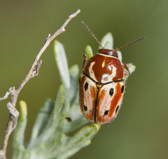
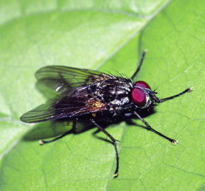
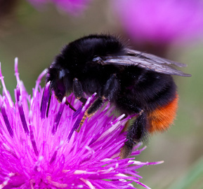
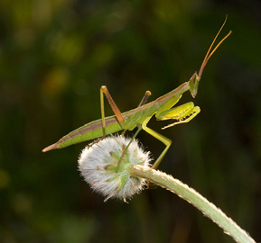
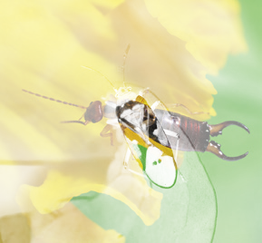
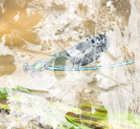

Los grupos de insectos
Coleópteros (escarabajos)
Su primer par de alas es duro y córneo.

Escarabajo sobre hoja
Lepidópteros (mariposas y polillas)
Sus dos pares de alas son de variados colores.
 Mariposa sobre tallo
Mariposa sobre tallo
Dipteros (moscas y mosquitos)
Sus alas posteriores son órganos de equilibrio.

Mosca sobre hoja
Himenópteros (abejas, avispas y hormigas)
Presentan dos pares de alas membranosas.

Abeja sobre flor
Ortópteros (saltamontes y grillos)
Disponen de dos pares de alas y patas posteriores adaptadas al salto.

Mantis sobre capullo de flor
Dictiópteros (cucarachas y mantis)
Su cuerpo es aplanado y sus patas son espinosas.

Tijereta sobre flor
Hemípteros (chinches y zapateros)
Poseen un pico perforador para succionar jugos.

Libélula sobre hoja
Odonatos (libélulas y caballitos del diablo)
Tienen grandes alas, grandes ojos y antenas pequeñas.